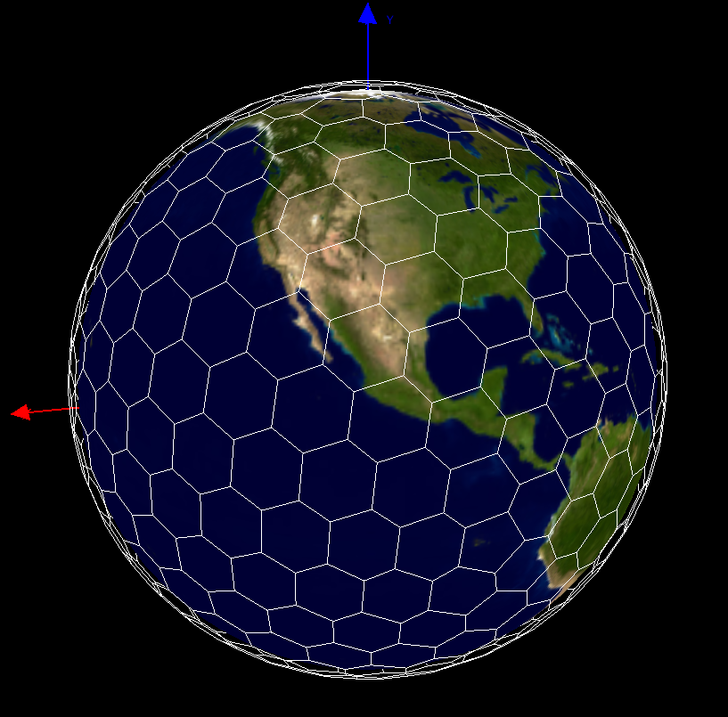
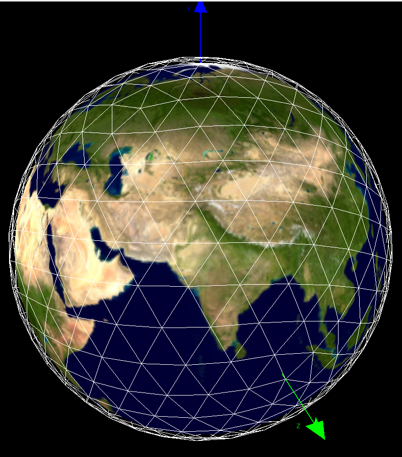
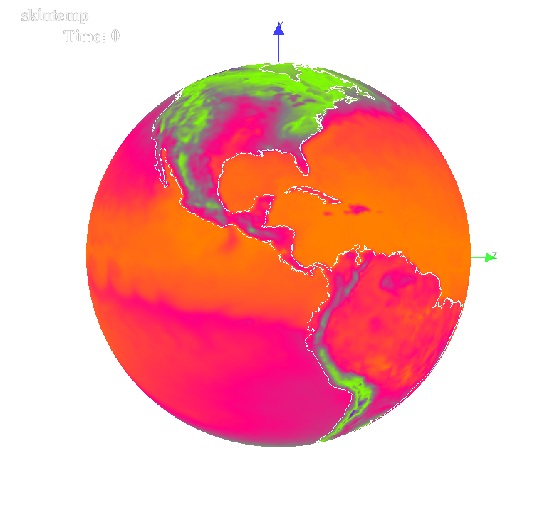
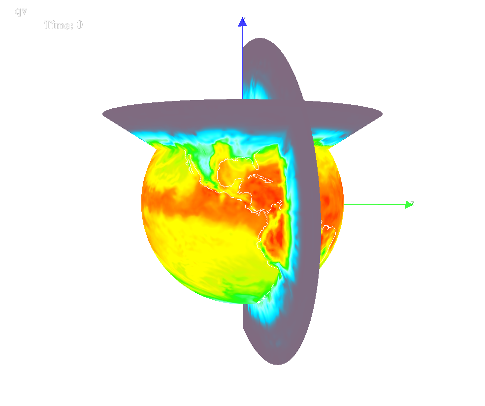
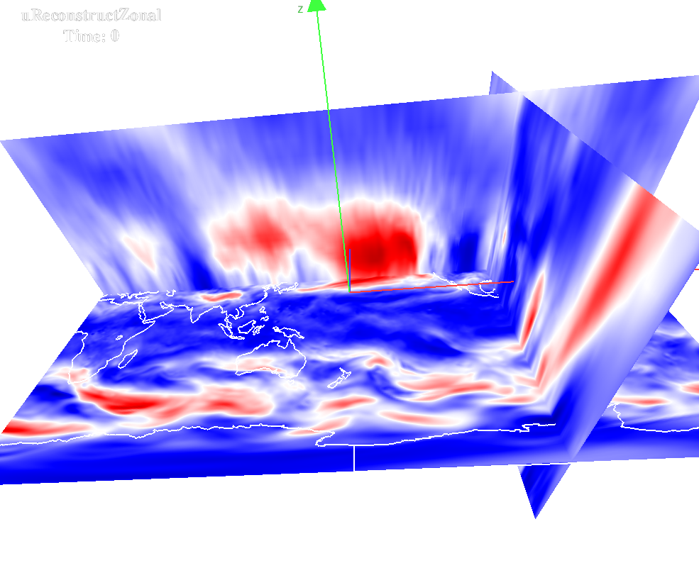

NV for MPAS
MPAS can be visualized with OpenGL only.
Users may go to NCL
web site to learn how to plot MPAS data with NCL.
Or visit MPAS web site for more information.
(A very low resolution>MPAS mesh.

(A very low resolution>MPAS triangular mesh.

MPAS Skin-temperature.

MPAS QV (on sphere).

MPAS Zonal wind (on plane).
